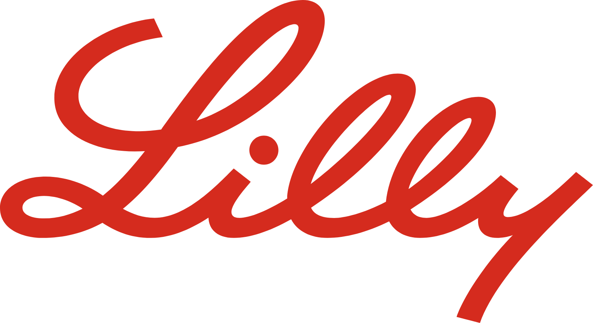

<script>

  document.addEventListener("DOMContentLoaded", function () {

    const footer = document.querySelector("#custom-footer");

    const firstSlide = document.querySelector(".reveal .slides > section:first-child");
 
    if (firstSlide && footer) {

      const observer = new MutationObserver(() => {

        const currentSlide = Reveal.getCurrentSlide();

        if (currentSlide === firstSlide) {

          footer.style.display = "none";

        } else {

          footer.style.display = "flex";

        }

      });

      observer.observe(document.querySelector(".reveal .slides"), { childList: true, subtree: true });

    }

  });
</script>
 
<div id="custom-footer" style="

  position: absolute;

  bottom: 2em;  /* Move up to avoid overlap */

  width: 100%;

  display: flex;

  justify-content: space-between;

  align-items: center;

  padding: 0 1em;

  font-size: 10px;

  color: gray;

  z-index: 99;  /* Ensure it stays above background */

">

<div>Company Confidential © 2024 Eli Lilly and Company</div>
</div>
 